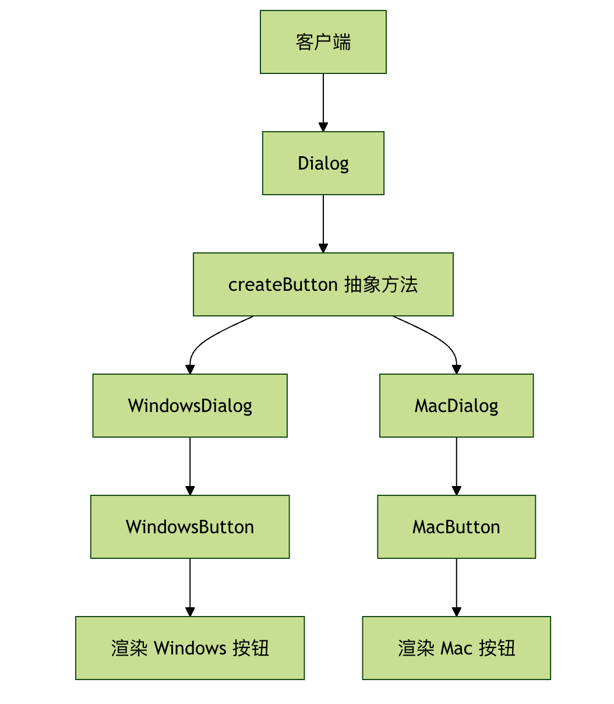

Python ファクトリーパターン
ファクトリーパターンは生成に関するデザインパターンの一つで、オブジェクトを作成する最善の方法を提供します。
レストランで注文することを想像してみてください。キッチンがどうやって料理を作るかを知る必要はなく、ウェイターに欲しいものを伝えるだけで、キッチンが作ってくれます。
ファクトリーパターンはまさにそのような「キッチン」であり、オブジェクトの生成を担当します。必要なのは、どのタイプのオブジェクトが欲しいかを伝えるだけです。
なぜファクトリーパターンが必要なのか？
プログラミングでは、しばしばオブジェクトを作成する必要があります。コード内で直接newキーワードやクラスのコンストラクタを使用すると、次のような問題が発生します：
- コードの結合度が高い：オブジェクトを作成するコードが具体的なクラスと密に結びついています
- メンテナンスが困難：オブジェクトの種類を変更または追加する必要がある場合、複数の場所のコードを修正する必要があります
- 開放閉鎖原則に違反する：拡張に対して開かれ、修正に対して閉じるという原則が損なわれます
ファクトリーパターンは、オブジェクトの生成プロセスをカプセル化することで、これらの問題を解決します。
ファクトリーパターンの3つのタイプ
ファクトリーパターンは主に3つのタイプに分けられます。具体的な例を通して理解しましょう。
1. シンプルファクトリーパターン
シンプルファクトリーパターンは最も基本的なファクトリーパターンで、1つのファクトリークラスを通じて異なるタイプのオブジェクトを作成します。
基本構造
例
# 製品インターフェース
class Animal(ABC):
@abstractmethod
def speak(self):
pass
# 具体的な製品
class Dog(Animal):
def speak(self):
return "ワンワン！"
class Cat(Animal):
def speak(self):
return "ニャーニャー！"
class Duck(Animal):
def speak(self):
return "ガーガー！"
# シンプルファクトリー
class AnimalFactory:
@staticmethod
def create_animal(animal_type):
if animal_type == "dog":
return Dog()
elif animal_type == "cat":
return Cat()
elif animal_type == "duck":
return Duck()
else:
raise ValueError(f"未知の動物タイプ: {animal_type}")
# 使用例
def test_simple_factory():
factory = AnimalFactory()
dog = factory.create_animal("dog")
cat = factory.create_animal("cat")
duck = factory.create_animal("duck")
print(dog.speak()) # 出力: ワンワン！
print(cat.speak()) # 出力: ニャーニャー！
print(duck.speak()) # 出力: ガーガー！
if __name__ == "__main__":
test_simple_factory()
長所と短所
長所：
- クライアントと具体的な製品クラスの結合が疎になる
- 責務が分離され、メンテナンスが容易
短所：
- 新しい製品を追加する際にファクトリークラスの修正が必要で、開放閉鎖原則に違反する
- ファクトリークラスの責務が重すぎて、単一責任原則に適合しない
2. ファクトリーメソッドパターン
ファクトリーメソッドパターンは、サブクラスにどのオブジェクトを生成するかを決定させることで、シンプルファクトリーパターンの問題を解決します。
基本構造
例
# 製品インターフェース
class Button(ABC):
@abstractmethod
def render(self):
pass
@abstractmethod
def onClick(self):
pass
# 具体的な製品
class WindowsButton(Button):
def render(self):
return "Windows スタイルのボタンを描画"
def onClick(self):
return "Windows ボタンがクリックされました"
class MacButton(Button):
def render(self):
return "Mac スタイルのボタンを描画"
def onClick(self):
return "Mac ボタンがクリックされました"
# 抽象クリエイタークラス
class Dialog(ABC):
@abstractmethod
def createButton(self) -> Button:
pass
def render(self):
# ファクトリーメソッドを呼び出して製品を作成
button = self.createButton()
result = button.render()
return result
# 具体的なクリエイター
class WindowsDialog(Dialog):
def createButton(self) -> Button:
return WindowsButton()
class MacDialog(Dialog):
def createButton(self) -> Button:
return MacButton()
# 使用例
def test_factory_method():
# 設定に基づいて具体的なファクトリーを選択
config = "windows" # 設定ファイルから読み取ることができます
if config == "windows":
dialog = WindowsDialog()
else:
dialog = MacDialog()
result = dialog.render()
print(result)
if __name__ == "__main__":
test_factory_method()
ファクトリーメソッドパターンのフロー

3. 抽象ファクトリーパターン
抽象ファクトリーパターンは、関連するオブジェクト群または依存するオブジェクト群を生成するためのインターフェースを提供します。それらの具体的なクラスを指定する必要はありません。
基本構造
例
# 抽象製品 A
class Button(ABC):
@abstractmethod
def paint(self):
pass
# 抽象製品 B
class Checkbox(ABC):
@abstractmethod
def paint(self):
pass
# 具体的な製品 A1
class WindowsButton(Button):
def paint(self):
return "Windows ボタンを描画"
# 具体的な製品 A2
class MacButton(Button):
def paint(self):
return "Mac ボタンを描画"
# 具体的な製品 B1
class WindowsCheckbox(Checkbox):
def paint(self):
return "Windows チェックボックスを描画"
# 具体的な製品 B2
class MacCheckbox(Checkbox):
def paint(self):
return "Mac チェックボックスを描画"
# 抽象ファクトリー
class GUIFactory(ABC):
@abstractmethod
def createButton(self) -> Button:
pass
@abstractmethod
def createCheckbox(self) -> Checkbox:
pass
# 具体的なファクトリー 1
class WindowsFactory(GUIFactory):
def createButton(self) -> Button:
return WindowsButton()
def createCheckbox(self) -> Checkbox:
return WindowsCheckbox()
# 具体的なファクトリー 2
class MacFactory(GUIFactory):
def createButton(self) -> Button:
return MacButton()
def createCheckbox(self) -> Checkbox:
return MacCheckbox()
# クライアントコード
class Application:
def __init__(self, factory: GUIFactory):
self.factory = factory
self.button = None
self.checkbox = None
def createUI(self):
self.button = self.factory.createButton()
self.checkbox = self.factory.createCheckbox()
def paint(self):
result = []
if self.button:
result.append(self.button.paint())
if self.checkbox:
result.append(self.checkbox.paint())
return "\n".join(result)
# 使用例
def test_abstract_factory():
# システムタイプに基づいてファクトリーを選択
system_type = "windows" # 自動検出または設定から読み取り可能
if system_type == "windows":
factory = WindowsFactory()
else:
factory = MacFactory()
app = Application(factory)
app.createUI()
print(app.paint())
if __name__ == "__main__":
test_abstract_factory()
3つのファクトリーパターンの比較
| 特性 | シンプルファクトリーパターン | ファクトリーメソッドパターン | 抽象ファクトリーパターン |
|---|---|---|---|
| 複雑さ | 低 | 中 | 高 |
| 拡張性 | 差 | 好 | 非常に良い |
| 適用シーン | オブジェクトの種類が少ない | 単一の製品ファミリー | 複数の関連製品ファミリー |
| 開放閉鎖原則 | 違反 | 遵守 | 遵守 |
| 依存関係 | 具体的なクラスに依存 | 抽象クラスに依存 | 抽象インターフェースに依存 |
実際の適用シーン
シーン1：データベース接続ファクトリー
例
import sqlite3
import mysql.connector
# データベース接続インターフェース
class DatabaseConnection(ABC):
@abstractmethod
def connect(self):
pass
@abstractmethod
def execute(self, query):
pass
# 具体的なデータベース接続
class SQLiteConnection(DatabaseConnection):
def __init__(self, db_path):
self.db_path = db_path
self.connection = None
def connect(self):
self.connection = sqlite3.connect(self.db_path)
return self.connection
def execute(self, query):
if self.connection:
cursor = self.connection.cursor()
cursor.execute(query)
return cursor.fetchall()
class MySQLConnection(DatabaseConnection):
def __init__(self, host, user, password, database):
self.host = host
self.user = user
self.password = password
self.database = database
self.connection = None
def connect(self):
self.connection = mysql.connector.connect(
host=self.host,
user=self.user,
password=self.password,
database=self.database
)
return self.connection
def execute(self, query):
if self.connection:
cursor = self.connection.cursor()
cursor.execute(query)
return cursor.fetchall()
# データベースファクトリー
class DatabaseFactory:
@staticmethod
def create_connection(db_type, **kwargs):
if db_type == "sqlite":
return SQLiteConnection(**kwargs)
elif db_type == "mysql":
return MySQLConnection(**kwargs)
else:
raise ValueError(f"サポートされていないデータベースタイプ: {db_type}")
# 使用例
def test_database_factory():
# SQLite 接続を作成
sqlite_conn = DatabaseFactory.create_connection(
"sqlite",
db_path="example.db"
)
sqlite_conn.connect()
# MySQL 接続を作成
mysql_conn = DatabaseFactory.create_connection(
"mysql",
host="localhost",
user="root",
password="password",
database="test"
)
mysql_conn.connect()
print("データベース接続の作成に成功しました！")
if __name__ == "__main__":
test_database_factory()
シーン2：ロガーファクトリー
例
from abc import ABC, abstractmethod
import sys
# ロガーインターフェース
class Logger(ABC):
@abstractmethod
def info(self, message):
pass
@abstractmethod
def error(self, message):
pass
@abstractmethod
def debug(self, message):
pass
# コンソールロガー
class ConsoleLogger(Logger):
def info(self, message):
print(f"INFO: {message}")
def error(self, message):
print(f"ERROR: {message}", file=sys.stderr)
def debug(self, message):
print(f"DEBUG: {message}")
# ファイルロガー
class FileLogger(Logger):
def __init__(self, filename):
self.filename = filename
def info(self, message):
with open(self.filename, 'a') as f:
f.write(f"INFO: {message}\n")
def error(self, message):
with open(self.filename, 'a') as f:
f.write(f"ERROR: {message}\n")
def debug(self, message):
with open(self.filename, 'a') as f:
f.write(f"DEBUG: {message}\n")
# ログファクトリー
class LoggerFactory:
@staticmethod
def get_logger(logger_type, **kwargs):
if logger_type == "console":
return ConsoleLogger()
elif logger_type == "file":
return FileLogger(**kwargs)
else:
raise ValueError(f"サポートされていないログタイプ: {logger_type}")
# 使用例
def test_logger_factory():
# コンソールロガーを作成
console_logger = LoggerFactory.get_logger("console")
console_logger.info("これは情報メッセージです")
console_logger.error("これはエラーメッセージです")
# ファイルロガーを作成
file_logger = LoggerFactory.get_logger("file", filename="app.log")
file_logger.info("ファイルに記録される情報")
file_logger.debug("デバッグ情報")
if __name__ == "__main__":
test_logger_factory()
ベストプラクティスと注意点
1. いつファクトリーパターンを使うべきか？
ファクトリーパターンの使用に適したケース：
- オブジェクトの生成プロセスが比較的複雑である
- 異なる条件に応じて異なるオブジェクトを作成する必要がある
- オブジェクトの生成と使用を分離したい
- システムが複数のタイプの製品をサポートする必要がある
使用に適さないケース：
- オブジェクトの生成プロセスが単純で、コンストラクタを直接使用すればよい
- 製品の種類が少なく、拡張の可能性が低い
2. よくある間違いと回避方法
間違い1：過度な設計
例
class SimpleObject:
def __init__(self, name):
self.name = name
# 過度に設計されたファクトリー
class SimpleObjectFactory:
@staticmethod
def create_simple_object(name):
return SimpleObject(name)
# 推奨：直接作成
obj = SimpleObject("test")
間違い2：ファクトリークラスの責務が多すぎる
例
class GodFactory:
def create_user(self): ...
def create_order(self): ...
def create_product(self): ...
def send_email(self): ... # これはオブジェクトの作成ではない！
# 推奨：責務ごとに分離する
class UserFactory: ...
class OrderFactory: ...
class ProductFactory: ...
3. 依存性注入との組み合わせ
ファクトリーパターンは、しばしば依存性注入（DI）と一緒に使用されます：
例
# サービスインターフェース
class NotificationService(ABC):
@abstractmethod
def send(self, message):
pass
# 具体的なサービス
class EmailService(NotificationService):
def send(self, message):
return f"メールを送信: {message}"
class SMSService(NotificationService):
def send(self, message):
return f"SMSを送信: {message}"
# ファクトリー
class NotificationFactory:
@staticmethod
def create_service(service_type):
if service_type == "email":
return EmailService()
elif service_type == "sms":
return SMSService()
else:
raise ValueError(f"未知のサービスタイプ: {service_type}")
# 依存性注入を使用するクラス
class OrderProcessor:
def __init__(self, notification_service: NotificationService):
self.notification_service = notification_service
def process_order(self, order):
# 注文処理ロジック
result = self.notification_service.send("注文処理が完了しました")
return result
# 使用
def main():
# ファクトリーを通じてサービスを作成
notification_service = NotificationFactory.create_service("email")
# 依存性を注入
processor = OrderProcessor(notification_service)
result = processor.process_order({"id": 1})
print(result)
if __name__ == "__main__":
main()
練習問題
練習1：シェイプファクトリーの実装
形状ファクトリを作成し、円（Circle）、長方形（Rectangle）、三角形（Triangle）の作成をサポートします。各形状には面積と周長を計算するメソッドが必要です。
要件：
- ファクトリメソッドパターンを使用する
- 各形状クラスが実装する
calculate_area()和calculate_perimeter()メソッド - 使用例を提供する
練習2：データベースファクトリーの拡張
前述のデータベースファクトリの例に基づいて、PostgreSQLデータベースのサポートを追加します。
要件：
- 作成する
PostgreSQLConnection类 - 新しいデータベースタイプをサポートするようにファクトリを変更する
- 既存のコードを壊さないことを確認する
練習3：設定駆動のファクトリー
設定ファイルに基づいてファクトリを動的に選択できるシステムを作成します。
要件：
- JSONまたはYAMLファイルから設定を読み取る
- 設定に応じて対応するオブジェクトを作成する
- 設定のホットアップデートをサポートする
まとめ
ファクトリパターンはPython設計において非常に重要な生成パターンであり、オブジェクトの生成プロセスをカプセル化することで、以下の利点を提供します：
- 結合度の低減：クライアントは具体的な製品の作成詳細を知る必要がありません
- 保守性の向上：作成ロジックを集中的に管理し、修正や拡張が容易です
- 柔軟性の向上：新しい製品タイプを簡単に追加できます
- コードの再利用の促進：作成ロジックは複数の場所で再利用できます
適切なファクトリパターンのタイプを選択することを忘れないでください：
- シンプルファクトリ（Simple Factory）：製品タイプが少なく、あまり変化しないシナリオに適しています
- ファクトリメソッド：製品ファミリーを拡張する必要があるシナリオに適しています
- 抽象ファクトリ：関連する製品ファミリーを作成する必要がある複雑なシナリオに適しています
ファクトリパターンを適切に使用することで、より柔軟で保守性が高く、拡張可能なPythonコードを書くことができます！
その他の拡張
クリックしてノートを共有
<p style="font-size:14px;">ノートはこの記事の内容の拡張である必要があります！</p><br> <p style="font-size:12px;"><a href="../tougao.html" target="_blank">記事投稿は、ここをクリックしてください</a></p> <p style="font-size:14px;"><a href="../w3cnote/runoob-user-test-intro.html" target="_blank">登録招待コードの取得方法</a></p> <h3 class="text-muted"><i class="fa fa-info-circle" aria-hidden="true"></i> ノートを共有する前に<a href=";.html" class="runoob-pop">ログイン</a>が必要です！</h3> <p><a href="../w3cnote/runoob-user-test-intro.html" target="_blank">登録招待コードの取得方法</a></p>